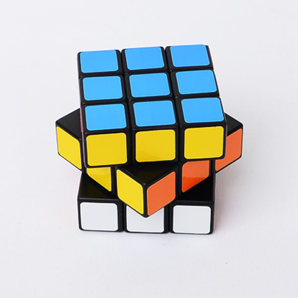

<h1>큐브에 대해</h1>
<ul>
  <li><a href="큐브의 역사.html"> 큐브의 역사</a></li>
  <li><a href="큐브의 종류.html">큐브의 종류</a></li>
  <li><a href="큐브세계최고기록들.html">큐브세계최고기록들</a></li>
  <li><a href="https://cubenjoy.com/?NaPm=ct%3Djk4x7bj0%7Cci%3Dcheckout%7Ctr%3Dds%7Ctrx%3D%7Chk%3D55ddc4b1b924489e35190fe4b8a1f62077e4001f">큐브 파는 곳</a></li>
  <li><a href="https://namu.wiki/w/%ED%81%90%EB%B8%8C%EC%97%94%EC%A1%B0%EC%9D%B4">더 많은 정보를 알고 싶으면 이 글을 클릭하시오</a></li>
</ul>
<p>큐브는 매우 <u>창조적</u>이며 <strong>공식</strong>을 외워서 맞추는 것이다.</p>
<p></p>
<h2>큐브를 잘한 사람만이 사회에서 성공하는 것이 아니다 맞춘것을 응용할 줄 알아야 한다</h2>
